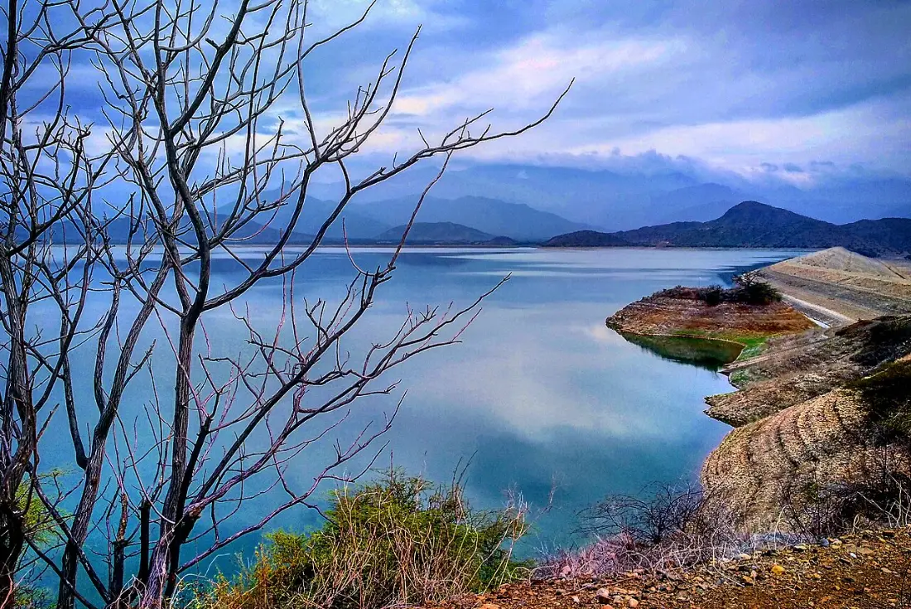
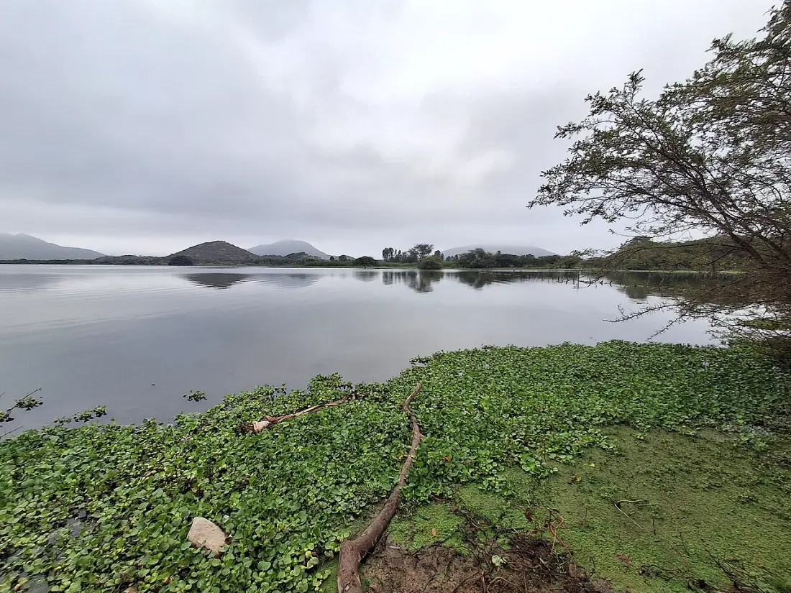
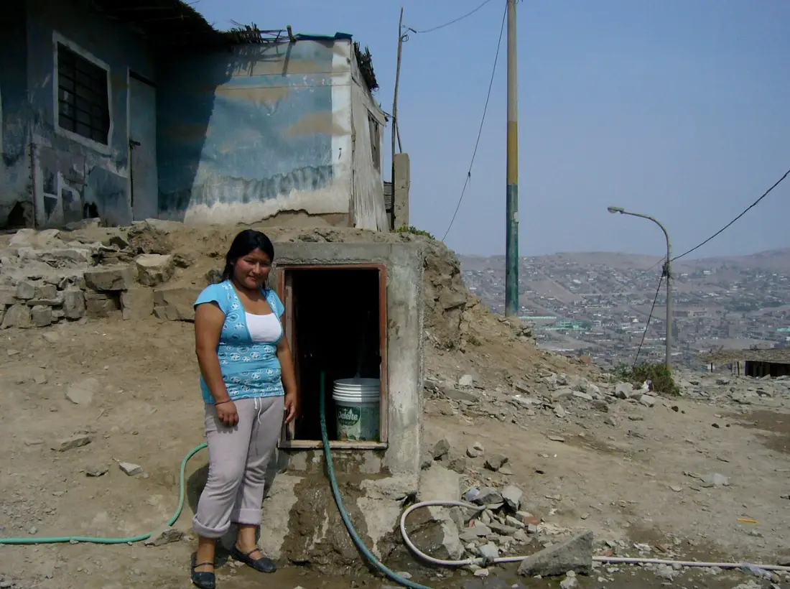
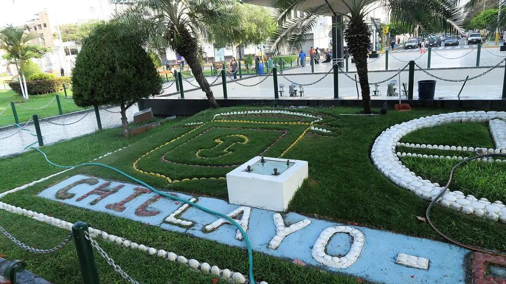
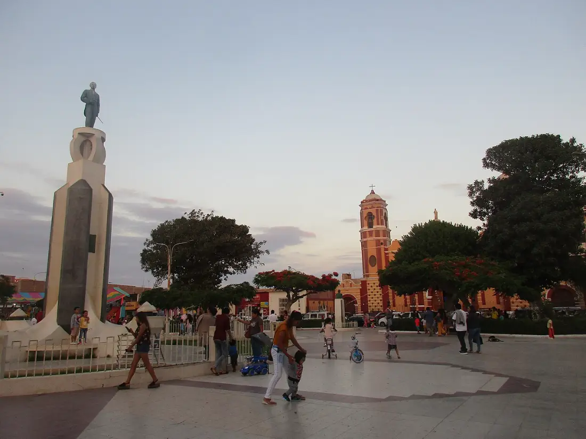

¿Hay agua hoy en tu zona?
EPSEL lleva el agua potable a Chiclayo, Lambayeque y Ferreñafe. Escribe tu zona y te decimos si hoy hay corte o si pasa la cisterna.
Cortes y avisos de hoy
Hoy
-
Revisa los cortes de hoy en Cortes y avisos.
La cisterna esta semana
-
Cargando los horarios de cada zona…
De dónde viene tu agua
El agua que sale de tu caño hace un viaje largo: baja de la sierra por el río Chancay, se guarda en Tinajones, reposa en las lagunas Boró y se limpia en la planta antes de llegar a tu casa.
El reservorio Tinajones guarda hasta 320 millones de metros cúbicos de agua del río Chancay. Su espejo de agua mide 20 km², como unas 2800 canchas de fútbol.

Desde Tinajones el agua vuelve al río Chancay y se reparte en el canal Taymi. En la toma Bola de Oro se separa el agua para la ciudad de la que va al campo.

Las lagunas Boró I y Boró II dejan que la tierra del agua se asiente. Boró II guarda un millón y medio de metros cúbicos: es la reserva de la ciudad cuando el río baja.
La Planta N.º 1 limpia hasta 700 litros por segundo en cinco pasos:
- Coagulación: se agrega sulfato de aluminio para que la tierra se junte.
- Floculación: el agua se mueve despacio y la tierra forma grumos.
- Decantación: los grumos pesan y caen al fondo.
- Filtración: el agua pasa por capas de arena.
- Desinfección: se agrega cloro para eliminar los microbios.
El agua limpia baja por las tuberías hasta tu caño. Donde la red no llega, como en los cerros y laderas, EPSEL la lleva en camiones cisterna.

320 millones
de metros cúbicos de agua puede guardar el reservorio Tinajones.
El agua en números
700 l/s
limpia la Planta N.º 1 de Chiclayo.
80 litros
por casa al día, como mínimo, cuando llega la cisterna.
Pagos y trámites
Paga tu recibo cerca de tu casa, pide una conexión nueva o revisa tu deuda sin hacer cola.
Ten a la mano tu número de suministro: está arriba, a la derecha, en tu recibo.
Dónde pagar tu recibo
- Agentes y bodegas autorizadas de tu barrio.
- Bancos y cajas: dando tu número de suministro.
- Desde el celular, con la app de pagos de tu banco.
- En las oficinas de EPSEL (mira oficinas y horarios).
Oficina virtual
Mira tus recibos, tu deuda y tu consumo con tu número de suministro, sin ir a una oficina.
Trámites: nueva conexión y otros
Para una conexión nueva de agua o desagüe lleva tu DNI y un documento de tu casa (título, constancia de posesión o contrato). También puedes pedir cambio de nombre o cierre del servicio.
Para empresas: desagüe no doméstico (VMA)
Los negocios e industrias que echan agua usada a la red deben cumplir los Valores Máximos Admisibles (VMA). Aquí verás qué se mide y cómo se cobra si se pasan.
Atención y reclamos
Cómo hacer un reclamo
- Ten tu recibo y tu DNI.
- Cuéntanos qué pasó: cobro alto, fuga, falta de agua u otro.
- Te damos un número de reclamo para seguirlo.
- EPSEL te responde por escrito en el plazo que fija SUNASS.
Oficinas y horarios
Lunes a viernes de 8:00 a.m. a 4:30 p.m. Oficinas en Chiclayo, Lambayeque y Ferreñafe.
Teléfono y direcciones: por confirmar con EPSEL.
Denuncias y sugerencias
¿Viste una conexión clandestina o una cisterna desviada? Cuéntanos. Puedes hacerlo sin dar tu nombre.
Enviar una denunciaInformación pública
Lo que EPSEL hace con el dinero de todos, sus metas y cómo pedir cualquier documento.
- Metas y resultadosCuántas casas tienen agua y desagüe, y cuántas horas al día.
- Rendición de cuentasEn qué se gastó el presupuesto de cada año.
- Pedir información públicaPide cualquier documento; la ley da 10 días hábiles para responder.
- Cómo se gestiona EPSELPlanes, directorio y decisiones de la empresa.
- Integridad y denuncias de corrupciónDenuncia un acto de corrupción de forma segura.
Nosotros
Llevamos el agua potable y el desagüe a las casas de Lambayeque.
Dónde damos servicio
Chiclayo, José Leonardo Ortiz, La Victoria, Pimentel, Monsefú, Reque, Lambayeque, Ferreñafe y otros distritos de la región.

